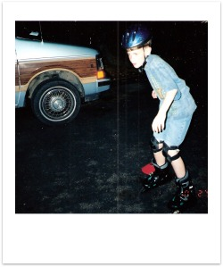

Fifth Grade (98'-99' - Age 10)
Fifth grade was one of my favorite years in grade school. I performed well in school, had one of my favorite teachers, a man by the name of Mr. Taylor, and had some great friends that year as well. I had met Mr. Taylor while in the third or fourth grade and had become good friends with him, and so I'd hoped that I would end up with him as my teacher, and sure enough I did. He had a way of connecting with the students well. He could talk to us at our own level, joke with us, and make us feel like we were equals in a way. He was able to let lose and have a lot of fun with us, but at the same time he knew how to lay down the law when he needed to.
As far as having lots of friends, and feeling very well known and popular, as funny as it sounds, the fifth grade felt like a prime year for me. Some of my best friends that year were Trevor Herbert and Earl Stegal; really had some great times with those kids. I got to spend a good bit of time with them outside of school, and I remember especially going over to Trevor's, who turned out to only be a minute or two drive away. I had my first experience over there driving a go-cart around in his driveway, and we would ride bikes, roller-blade, play catch, and I remember having the funnest time playing this Nascar video game that he had. Neither of us really liked Nascar, but for whatever reason decided to play it, and we discover that you could create monster crashes if you would turn your car around and drive backwards around the course and smash into the pile of oncoming cars. It was absolutely hilarious to us, especially to see all the forty-something drivers try to slam on their brakes and avoid us in perfect unison.
It was also around this age that I started becoming more interested in the girls in my class, and while I knew it was against the rules to date before I was sixteen, I become quite the little flirt. Being the exactly obedient kid that I was, I wouldn't dare cross the line and do something I shouldn't, and I can specifically remember telling one girl in particular that even though I really liked her, it was against my beliefs to date until I was sixteen, so we would have to wait until I got older.
My fifth grade year was also the beginning of my introduction to playing music. My mother spent some time learning how to play the harmonica, so when I noticed her playing I decided I wanted to join in and learn to. I never became fantastic at it, but I learned how to play a few songs, and then I auditioned to play it at the school talent show. The talent show at Valley View was always a big deal for the kids. For about a week or two, each day our music and gym classes would be combined, and every student in the school would showcase some kind of act or talent in front of the class. If Mr. Neal or the music teacher thought you did an especially good job you could pick a mystery prize, and you could possibly even be chosen to perform at the school talent show in front of all the parents. I was lucky enough to get a prize for playing “Oh, Susanna” and a blues riff on my harmonica, and was chosen to play in the talent show as well. It was super exciting to be part of the show; I got to be pulled out of class for rehearsals, and absolutely loved performing in front of the crowd of parents. I had a big ole' grin on my face as the crowd applauded.
Another big event during this year was the time capsule that the school put together. Each class got to choose something that we felt represented our generation, and then we put them all in a large capsule and buried it underneath a large stone by the track. We even had some journalists attend to write stories about the event, and I ended up with my picture on the front page of the local newspaper.
As much as I enjoyed the fifth grade, it didn't go without its fair share of difficulties. I don't what it is that brought them on, but during the tail end of this year I started to really struggle with anxiety attacks. I would feel my heart start to race, and would become nervous and upset for almost no reason. While at school I would get a homesick, out of place feeling, and I would need to take some time away from my class until I calmed down and felt normal again. There would be some days where I'd become overwhelming nervous and worried while waiting at the bustop, and so I would walk back home and just say “Sorry, I just can't go today.” Eventually I was able to work through the anxiety, and the attacks became less frequent, but I still dealt with them throughout middle school and high school.
Also during the summer following this school year there were a couple other minor tragedies. My pet parakeet named Woody died, of all times on my brother Jace's birthday, and then a few months later my Grandmother on my mom's side passed away. Being as young as I was I don't feel like ever really knew her well, but I was sad when she died, and felt especially bad for my mother, aunt's and uncle's and especially my grandpa. He really struggled with her passing; it was tough for him to live without her. I'm personally not married, so I know I can't fully understand the kinds of feelings and emotions that would erupt after losing your spouse, but just thinking about enduring that almost breaks my heart. It must have been especially difficult from my grandpa's perspective, because he wasn't a member of the church, and probably didn't have the same confidence that I do in the possibility of an eternal family. For me that is the ultimate blessing of the gospel, and really the whole point to Heavenly Father's plan for us.
Continue to "Sixth Grade" >>